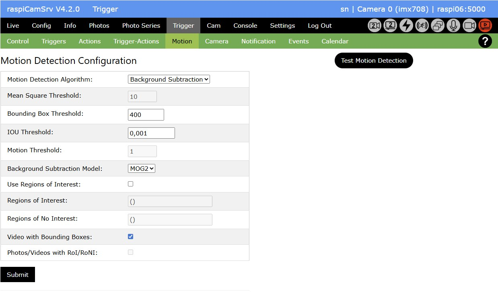

Triggered Capture of Videos and Photos

Motion Capturing
With Motion Capturing, you may trigger actions in case that raspiCamSrv has detected changes in the visual area of the active camera.
Sensitivity of detection is strongly dependent on the algorithm used for detection.
raspiCamSrv currently supports 4 different algorithms: - Mean Square Difference between pixel color levels of successive frames. - Frame Differencing - Optical Flow - Background Subtraction
The latter 3 variants are implementations of algorithms proposed by Isaac Berrios in Introduction to Motion Detection.
Whereas the Mean Square Difference is available in general, the other algorithms require special preconditions for Extended Motion Capturing.
Motion Detection Configuration

This section allows specification of motion capturing aspects:
- Motion Detection Algorithm
allows selecting the algorithm by which the system will recognize motion through its camera.

Depending on the selected algorithm, the relevant parameters are editable and can be adjusted. - Mean Square Threshold
is the value of the mean square difference above which the system detects a motion event. - Bounding Box Threshold
is the threshold for acceptable contour sizes (see IB-1) - IOU Threshold
is the Threshold for "Intersection Over Union or IOU" of overlapping bounding boxes (see IB-1) - Motion Threshold
is the minimum flow threshold for motion used in Optical Flow algorithm (see IB-2) - Background Subtraction Model
is the model used for generating a background model in Background Subtraction algorithm. (see IB-3) - Video with Bounding Boxes
allows selection of the type of video recorded for a motion event, if activated on the Control tab.
If activated, the video will show bounding boxes around areas for which motion has been detected.
Otherwise, normal videos will be recorded. - Use Regions of Interest
If selected (and submitted) it will be possible to specify a set of rectangular areas which serve as Regions of Interest / Regions of NO Interest.
For Regions of Interest (RoI), motion will only be detected when occurring within these regions (see below).
Regions of NO Interest (RoNI) will be generally excluded from motion detection. - Regions of Interest
This field holds the Regions of Interest as a tuple of tuples where each tuple represents one region with (x offset, y offset, width, height). The values refer to the Pixel Array Size of the sensor.
The field is not editable; it is populated when Regions of Interest are drawn. - Regions of No Interest
This field holds the Regions of No Interest as a tuple of tuples where each tuple represents one region with (x offset, y offset, width, height). The values refer to the Pixel Array Size of the sensor.
The field is not editable; it is populated when Regions of No Interest are drawn. - Photos/Videos with RoI/RoNI
This switch decides whether or not Regions of Interest and/or Regions of NO Interest are drawn on photos or videos captured while Motion Detection is active.
NOTE: When Algorithm "Mean Square Diff" is used, RoIs/RoNIs can only be shown on photos but not on videos.
Any changes must be submitted with the Submit button.
Changes will be effective after the Motion Capturing Process has been started the next time.
For example, trees or leaves moving in the wind are normally not of interest.
Regions of Interest and Regions of NO Interest
In many cases, it is desirable to restrict the motion-sensitive region of the camera view to specific areas.
raspiCamSrv supports two type of areas: - Regions of Interest (RoI) restrict motion detection to these areas - Regions of NO Interest (RoNI) exclude motion detection from specific areas.
Both can be used simultaneously or alternatively.
When no RoI is defined, the entire cropping area will be the Region of Interest.
RoNIs will only have an effect if at least a part of them is within a RoI.
NOTE: Regions of Interest may be automatically adjusted when the Live View is zoomed or panned/tilted
After Use Regions of Interest has been activated (and submitted), a Live View will be shown with a canvas activated on which the intended regions can be drawn:

You first need to select the type of region to be drawn. Afterwards, you draw the region with left mouse key pressed.
Regions of Interest are shown with green border line.
Regions of No Interest are shown as blue filled rectangle
While drawing a new region, the borders of previously drawn regions are invisible.
All borders are shown as soon as the mouse pointer has left the drawing canvas.
To remove previously drawn regions, just deactivate and activate the Use Regions of Interest checkbox without submitting.
After all intended regions are finally drawn, submit the Motion Detection Configuration settings.
Testing Motion Capturing
In order to optimize the parameters for the intended application, raspiCamSrv allows test runs for the selected algorithm.
During a test run, no events are generated. Instead, a preview of different aspects of the chosen algorithm is shown.
Detected motion events are indicated by the occurrence of bounding boxes.
An active test run is indicated by the turquoise status indicator.
- For the Mean Square Difference algorithm, there is no test. However, pressing the Test Motion Detection button will show the current framerate in the message line, if motion detection is active.
- For the other algorithms, pressing the Test Motion Detection button will stop an active Motion Detection server and start a test run.
A set of 4 intermediate images are presented which are calculated from the last, or the last two, frames.
If Regions of Interest are defined, these will be considered and visualized during the test.
Test for Frame Differencing Algorithm
For a detailed description of this algorithm, see Introduction to Motion Detection: Part 1 by Isaac Berrios.

Test for Optical Flow Algorithm
For a detailed description of this algorithm, see Introduction to Motion Detection: Part 2 by Isaac Berrios.

Test for Background Subtraction Algorithm
For a detailed description of this algorithm, see Introduction to Motion Detection: Part 3 by Isaac Berrios.

This algorithm can normally be expected to give best results.
The fact that the shown example has a lower quality compared to Optical Flow may be attributed to the 'stationary' movement of the object which 'burns' itself into the background model because each frame contributes to the model.
Performance
The performance requirements for the different algorithms have an impact on the frame rates which can be achieved during testing and an active Motion Capturing process.
In order to get information on the frame rates, these are measured during a test and displayed at the bottom of the screen.
Reliable values can only be obtained after the test has run some time. Therefore, it is necessary to refresh the screen using the button aside of the displayed value.
Unfortunately, framerates had not been refreshed before recording the GIFs, above.
The the following table shows framerates observed with a Pi 5 and a camera model 3:
| Algorithm | Stream | Sensor Mode | Stream Size | Framerate |
|---|---|---|---|---|
| Mean Square Diff | lores | default | 640 x 360 | ~14 |
| Frame Differencing | lores | default | 640 x 360 | ~14 |
| Optical Flow | lores | default | 640 x 360 | ~5 |
| Background Subtraction | lores | default | 640 x 360 | ~14 |
| Mean Square Diff | lores | 0 | 1536 x 864 | ~14 |
| Frame Differencing | lores | 0 | 1536 x 864 | ~14 |
| Optical Flow | lores | 0 | 1536 x 864 | ~1 |
| Background Subtraction | lores | 0 | 1536 x 864 | ~5 |
| Mean Square Diff | lores | 1 | 2304 x 1296 | ~10 |
| Frame Differencing | lores | 1 | 2304 x 1296 | ~6 |
| Optical Flow | lores | 1 | 2304 x 1296 | ~0.3 |
| Background Subtraction | lores | 1 | 2304 x 1296 | ~2 |
Below is a load profile taken wit a Pi5, 8GB memory, built in a standard case with fan.
Steaming was never active and no motion was tracked during recording.

Motion tracking with different algorithms was run for 30 minutes in the following sequence: - 18:15 - System idle - 18.30 - Mean Square Diff - 19:00 - Frame Differencing - 19:30 - Background Subtraction - 20:00 - Optical Flow - 20:30 - Motion tracking stopped - 20:45 - raspiCamSrv stopped
Although there is a significant impact on CPU utilization, especially for the Optical Flow algorithm, CPU temperature is within reasonable ranges.
Recorded Videos
If the option to record videos with bounding boxes has been chosen, the videos are generated frame by frame within the algorithm.
The framerate needs to be specified before frames are added to the video.
Currently, the video is started when a motion event has been detected (final number of detected bounding boxes > 0). However, at this time, the real frame rate is not yet known. Therefore a rough estimate is used for the individual algorithms which is close to the values shown in figures, above.
This results in videos with motion speed close to real life.
If, however, the achieved rates on a specific system differ from these values, the video speed may be timelapse or slow-motion.